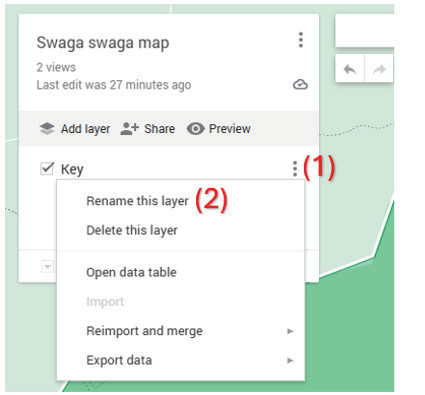
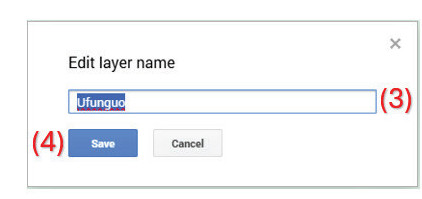
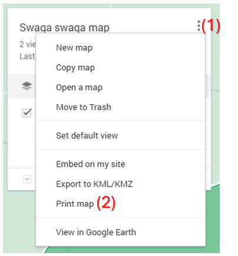
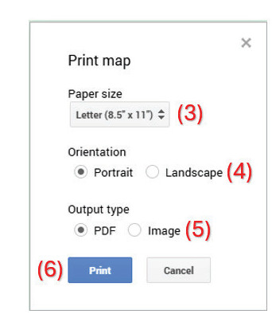

9. To add a map key, left-click the three vertical dots at the bottom (1) on the left side of the map. Select “Rename this layer” (2), type “Key” in the “Edit layer name” box (3), and then click the “Save” button (4), as shown in Figure 14.

→

Figure 14: Inserting a key on the map you have drawn
10. Print your map for future use. You can print a digital map in two ways: as a PDF file or as an image. To do this, go to the three dots (1) on your map, then select “Print map” (2), as shown in Figure 15.

→

Figure 15: Printing a map